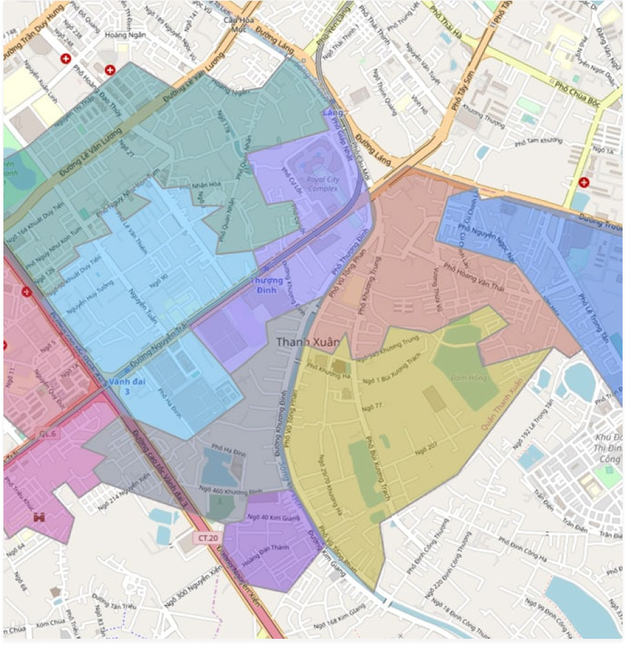

<b-modal 
    :id="modalId" 
    :data="toado"
    size="xl" 
    no-close-on-backdrop
    hide-footer 
    hide-header 
    hide-header-close 
    @shown="focusMyElement"
    body-class="modal-body p-0">
    <div class="modal-content popup-box">
        <div class="popup-header">
            <div class="title">
                <span class="icon one-notepad"></span> Bản đồ
            </div>
            <div
                class="close -ap icon-close"
                data-dismiss="modal"
                @click="$bvModal.hide(modalId)">
            </div>
        </div>
        <ModalChonDiaChi modalId="_popupDiaChi" :data="null" :isStrictMode="false" @xacnhan="getDiaChi"/>
        <div class="list-actions-top">
            <ul class="list">
                <li>
                    <a href="javascript:void(0)" class="btn" @click="xacnhan()">
                        <span class="icon nc-icon-glyph ui-1_check-circle-08"></span> Xác nhận
                    </a>
                </li>
                <li>
                    <a href="javascript:void(0)" class="btn" @click="print()">
                        <span class="icon one-print"></span> In bản đồ
                    </a>
                </li>
            </ul>
        </div>
  
        <div class="popup-body">
            <div class="box-form">
                <div class="map-canvas-box">
                    <GMap id="chonbando" ref="mapcontrol" @luuToaDoBanDo="luuToaDoBanDo"></GMap>  
                    <div class="search-box">
                        <div class="input-group">
                            <div class="input-text">
                                <div class="input-icon-left">
                                    <input type="text" class="form-control" v-model="query" v-on:keyup="timkiem($event)" ref="txtSearch">
                                    <span class="icon one-search"></span>
                                </div> 
                            </div>
                            <div class="input-addon">
                                 <button class="btn" v-b-modal._popupDiaChi>
                                    <span class="-ap icon-more_horiz"></span>
                                </button>
                            </div>
                        </div>
                    </div>
                    <div class="action-right">
                        <!-- <a href="#" class="change-type">
                              
                        </a> -->
                    </div>
                </div>
            </div>
        </div>
    </div>
</b-modal>
           